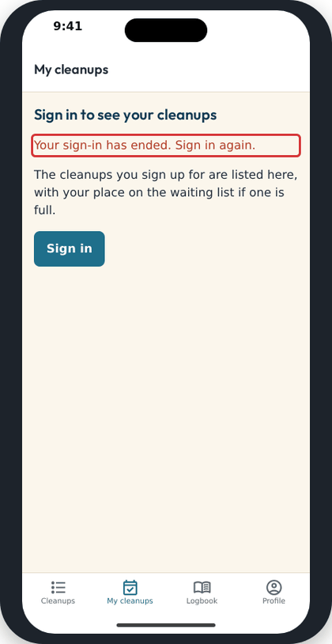
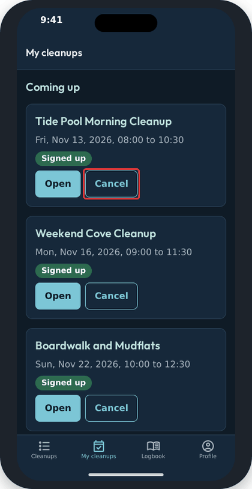

🗃️ Lesson 5.2: TanStack Query on Mobile
You already know TanStack Query from the HQ: keys, query functions, staleTime, mutations that invalidate. On a phone the same cache needs two things a browser gave it for free: a way to hear that the app came back from the background, and a way to hear that the signal came back. Today Shoreline Crew moves onto the cache, the Cleanups list pages itself, and volunteers finally sign up for a cleanup, and cancel, from the phone in their hand.
🎯 Learning Objectives
By the end of this lesson, you will be able to:
- Say which signals a browser gives TanStack Query that a phone does not, and connect
focusManagertoAppStateandonlineManagerto NetInfo - Explain what a "paused" query or mutation is, and show volunteers what is happening while the phone has no connection
- Load a list page by page with
useInfiniteQuery, keeping the footer states, pull to refresh and the "ask only when idle" rule from Lesson 3.2 - Refresh a screen's data when it comes back into view, because tabs and stacks keep screens mounted
- Sign up for a cleanup and cancel with mutations that wait for the API and invalidate what they change
- Notice an ended sign-in (a 401) in one place for every query and mutation
📦 Code for this lesson
Starting code: lesson-16-start.zip · Finished code: lesson-16-end.zip. Each folder has a README with the commands to run it.
In This Lesson
👋 Welcome: The Same Cache, Another World
Since Lesson 1.3, every screen of Shoreline Crew has fetched its own data with useEffect: an AbortController, a Load union, an attempt counter for Try again, a refreshing flag, and on the Cleanups list a whole More state for the next page. You wrote that on purpose, to see what fetching involves. In the HQ you replaced the same kind of code with TanStack Query in one lesson. Today you do it again, and most of it is a straight copy of what you know.
What is new is the world around the cache. A browser tab tells TanStack Query when you come back to it and when the network returns, and the cache refetches by itself. A phone app runs in the foreground, goes to the background when you answer a message, and spends a beach morning on one bar of signal or none at all. Nobody tells the cache about any of it unless you do.
By the end of today:
- Every screen reads the cache: the Cleanups list with
useInfiniteQuery, the cleanup screen, Profile and the new My cleanups. - The cache hears the phone: coming back to the foreground refetches stale data, and losing the connection makes requests wait instead of failing.
- Volunteers sign up and cancel, with the spots left and My cleanups updated by invalidation, as in the HQ.
- An ended sign-in is noticed in one place, whichever screen happens to find out.
Why it matters for your work: almost every React Native app with a server uses a data library, and TanStack Query is the most common one. Teams that ship to phones learn the hard way that "works in the browser" says nothing about the app coming back after an hour in someone's pocket. Knowing which signals to wire, and checking them, is what separates a demo from an app people trust.
Why it matters for the volunteers: a crew leader checks the list on the drive to the beach, the signal drops at the car park, and the phone goes back in a pocket. The app should keep showing what it had, say honestly that it is waiting, and catch up the moment it can.
🌱 Familiar tools, new terrain
It can feel strange to "relearn" a library you already used. You are not starting over: you are learning which of its assumptions came from the browser. That is the skill this whole course is about, and it gets faster with every library you move to a phone.
📡 What a Phone Does Not Tell the Cache
In the HQ course you saw TanStack Query refetch a stale answer "when the window regains focus, or when the network reconnects". It knows those moments because a browser announces them: TanStack Query's focusManager listens for the page's visibilitychange event, and its onlineManager for the window's online and offline events. The course read the 5.107 source: both listeners are added only when window.addEventListener exists. React Native has a global window object, but no such events (the course found no addEventListener for it in React Native's or Expo's startup code), so in Expo Go the cache should never hear either moment.
| The moment | In a browser | On a phone | Shoreline Crew wires it with |
|---|---|---|---|
| You come back to the app | The tab becomes visible: visibilitychange | The app returns to the foreground: React Native's AppState changes to 'active' | focusManager.setFocused() in useAppStateFocus |
| The connection drops or returns | The window's offline / online events | Nothing built in; the NetInfo library reports Wi-Fi and mobile data changes | onlineManager.setEventListener() in useOnlineManager |
| You come back to a screen | A new page mounts, and its queries start | Tabs and stacks keep screens mounted: nothing starts again | useRefreshOnFocus (Screens That Never Unmount) |
💡 Mental model: the radio check
On a big cleanup, the crew leader keeps a notebook of what each team last reported. In the car park it is easy: everyone is within shouting distance. Out on the beach, the leader only knows a team is back if the team radios in ("Team 3, back at the tide line"), and only knows the radio is down if someone says so. TanStack Query is the leader with the notebook. In a browser, people shout. On a phone, you hand out the radios: AppState radios in "back in the foreground", NetInfo radios in "signal lost" and "signal back".
Back in the foreground: AppState
AppState.currentState is 'active' while the app is on screen and 'background' when the person has switched away (iOS also reports a brief 'inactive', for example while the app switcher is open). AppState.addEventListener('change', …) calls you with each new state. Telling the cache takes one line: focusManager.setFocused(status === 'active'). From then on, an app coming back to the foreground refetches every stale query a screen is using, exactly like a browser tab you return to. The web preview keeps the browser's own signal, so the hook does nothing there.
Signal lost and found: NetInfo
@react-native-community/netinfo is a native module that Expo Go already contains (the SDK 58 version is 12.0.1, so npx expo install picks it). NetInfo.addEventListener calls you with a state such as { type: 'wifi', isConnected: true, isInternetReachable: … } and returns a function that stops listening, which is exactly the shape onlineManager.setEventListener wants. Two details matter for Shoreline Crew:
- Use
isConnected, notisInternetReachable. "Reachable" means NetInfo could reach a test address on the internet. shoreline-api is on your Wi-Fi, and a home network without internet still reaches it. On a beach both mean the same thing; at your desk onlyisConnectedis right. isConnectedcan benullwhile NetInfo does not know yet, at startup. Counting that as online keeps the first load from waiting for nothing.
Like the focus hook, the online hook leaves the web preview alone, where TanStack Query already hears the browser's online and offline events. There is a measured reason too: NetInfo's web version, in Chrome, listens to a different browser event (navigator.connection's change), and the course's offline test went unnoticed through it, while the browser's own offline event arrived.
Offline means "paused", not "failed"
This is the part that changes how the app feels. With the online manager wired, TanStack Query's default networkMode: 'online' applies: when the phone is offline, a query that needs to fetch does not even try. Its fetchStatus becomes 'paused', and the cached answer stays on screen. When NetInfo says the connection is back, paused queries continue by themselves, and stale ones on screen are fetched again. Mutations pause the same way and are sent when the phone is back online.
The course measured it in the web preview, with Chromium switched offline (the same onlineManager state, set by the browser's event instead of NetInfo). With the cleanups on screen, going offline and pressing Refresh sent no request at all: the button said "Refreshing…", the cards stayed, and the list added "No connection. These are the cleanups from before: they update when you are back online." Three seconds later, back online, the waiting refresh sent its two requests by itself and the line went away.
The course also saw the other side by accident. In a first run, the online manager was never told (NetInfo's web version missed the browser's offline switch, see above). The same press of Refresh sent both requests anyway; they failed, were tried again a second later and again two seconds after that (the HQ's retry rule), and the spinner kept spinning the whole time. That is what a phone without useOnlineManager should do too: work hard, fail slowly, and only then say what the volunteer already knew.

📜 A List That Pages Itself
The HQ never needed this one, so it is new to you: useInfiniteQuery, the cache's version of Lesson 3.2's paging. Instead of one answer per key, the cache keeps a list of pages under one key, and knows how to ask for the next one. You give it three things besides the key:
| Option | Shoreline Crew's value | What it does |
|---|---|---|
initialPageParam | 1 | The "page parameter" for the first request |
queryFn: ({ pageParam, signal }) | getEvents(`when=upcoming&page=${pageParam}&perPage=5`, signal) | Fetches one page; pageParam is typed from initialPageParam (a number) |
getNextPageParam: (lastPage) => … | The next page number while page < totalPages, else undefined | Where the next page starts; undefined means "this was the last page" |
Like queryOptions, an infiniteQueryOptions factory keeps key and functions together, and TypeScript reads every type from it. What a screen gets back maps almost one to one onto the state you wrote by hand in Lesson 3.2:
| Lesson 3.2, by hand | Now, from useInfiniteQuery |
|---|---|
load.events (pages appended) | data.pages: one Page<CleanupEvent> per request; you flatten them |
hasMore | hasNextPage (from getNextPageParam) |
loadNextPage() | fetchNextPage() |
more.status === 'loading' | isFetchingNextPage |
more.status === 'failed' | isFetchNextPageError (the cards stay) |
attempt counter, retry() | refetch() |
| A failed refresh replaced the cards with an error | isRefetchError: the cards stay, the error is a line above them |
Two rules from Lesson 3.2 stay yours, because they are about the list, not the cache. First, ask only when idle: onEndReached calls fetchNextPage() only when hasNextPage is true, nothing is fetching, and the last page did not fail (TanStack Query's documentation gives the same advice: a fetchNextPage during a refetch can overwrite it). Second, never show a cleanup twice: the pages are kept as the API sent them, so the screen still removes duplicates when it flattens them.
One behavior is new, and worth knowing before you see it: a refetch of an infinite query fetches every page it has, one after another, starting from the first. With two pages loaded, the Refresh button asked for page 1 and then page 2 (measured), so the list stays as long as it was instead of shrinking back to five cleanups. That is TanStack Query keeping the pages consistent with each other: page 2 is asked for with the answer to page 1 in hand.
Pull to refresh without a spinner that never stops
A query result has isRefetching, and it is tempting to pass it straight to refreshing. TanStack Query's React Native examples use a flag of their own instead, for a good reason: Shoreline Crew now refetches on its own a lot (back in the foreground, back online, after every sign-up), so the spinner would appear without anyone pulling. Shoreline Crew keeps its own refreshing state, true only while the refresh the volunteer asked for runs. And when the phone is offline, that refresh is paused, so the spinner hides until the connection returns (the waiting line explains it).
🧭 Screens That Never Unmount
On the web, following a link usually unmounts one page and mounts another, and a query on the new page starts (or refetches, if stale) as it mounts. On a phone, Lesson 4.2 showed the opposite: tabs you have visited stay mounted, and a screen under a pushed screen stays mounted too. So when a volunteer comes back to My cleanups after ten minutes on the Cleanups tab, nothing mounts and nothing asks the API. Neither the app's focus nor the network changed, so the two managers stay quiet as well.
Expo Router's useFocusEffect (Lesson 4.3 used it on Profile) runs code each time a screen comes into view. Shoreline Crew's useRefreshOnFocus(key) uses it to ask the cache to refetch the queries under one key, with two filters that keep it polite:
stale: true: only answers older thanstaleTime(30 seconds) are fetched again, the same rule a browser tab follows. Switching tabs back and forth quickly sends nothing (measured: back to My cleanups within 30 seconds, no request; after 31 seconds, oneGET /api/me/signups).type: 'active': only queries a mounted screen uses and has not disabled. A guest's My cleanups query is disabled (enabled: false), so it is left alone. That filter is not decoration: Common Mistakes shows what a guest's screen did without it.
The first focus is skipped, because the screen's queries have just loaded. Profile uses the same hook for its "is my sign-in still good?" check, which replaces the hand-written useFocusEffect from Lesson 4.3.
✍️ Signing Up Is a Mutation
shoreline-api has had everything a volunteer needs since the HQ course, and Lesson 3.1 even signed someone up with curl. Three endpoints, all signed in:
| Request | What it does | The API decides |
|---|---|---|
GET /api/me/signups | Your sign-ups, each with its cleanup (event), the latest cleanup first | Statuses: confirmed, waitlisted, cancelled, attended, no-show |
POST /api/events/:id/signups | Sign up for a scheduled cleanup from today on | confirmed while spots are left, else waitlisted; 409 if you already are signed up |
PATCH /api/signups/:id with { "status": "cancelled" } | Give your spot back (volunteers may only cancel) | If you held a spot, the first person on the waiting list gets it |
Everything else is the HQ's Lesson 7.2: a mutationOptions factory per change in src/api/mutations.ts, useMutation in the screen, and invalidation by key afterwards. The decisions are what make it Shoreline Crew's:
- Wait for the API, no optimistic update. You could show "You are signed up" at once, but the app does not know whether the answer will be a spot or the waiting list: only the API knows who else signed up a second ago. A wrong "You are signed up" on a full cleanup is worse than half a second of "Signing up…".
- Invalidate
['events']and['signups']. A sign-up changes the spots left on every list and cleanup screen, and your own sign-ups. The HQ's general-to-specific keys pay off again: two calls reach the paged list, every cleanup screen and My cleanups. - In
onSettled, notonSuccess. When the API says no (409: "You are already signed up for this cleanup." after signing up on another phone, or a full cleanup a moment ago), the screen needs the truth just as much.describeErrorlearns to show a 409's own words. - Return the promise. As in the HQ, the mutation stays pending until the refetches on screen are done, so the button says "Signing up…" until the panel can say "You are signed up" with the new spots count.
Measured in the web preview, signed in as Theo on Boardwalk and Mudflats, one press of Sign up sent four requests, in this order:
| Request | Answer | Why |
|---|---|---|
POST /api/events/e09/signups | 201, status confirmed | The mutation |
GET /api/events?when=upcoming&page=1&perPage=5 | 200 | ['events']: the Cleanups list under the cleanup screen (the anchor from Lesson 4.4 keeps it mounted) |
GET /api/events/e09 | 200 | ['events']: the cleanup screen itself |
GET /api/me/signups | 200 | ['signups']: the panel (and My cleanups, which shares the entry) |
Only then did the button change: the spots line went from "9 of 16 spots left" to "8 of 16 spots left", and the panel to "You are signed up. See you on the beach!", without a line of code that knew about spots. Cancel my sign-up sent a PATCH and the same three refetches, and both came back.
A sign-up with no signal
Mutations pause offline too. Pressed with no connection, Sign up sent nothing, the button said "Signing up…", and the panel added "No connection: this is sent when you are back online." Back online, the POST went out by itself, followed by the three refetches, and the panel showed "You are signed up. See you on the beach!" (measured). In the run where the online manager was not told, the same press failed at once with "Could not reach the server at …", because mutations are not retried. That is the right behavior for a sign-up, because the API refuses a second one with a 409: if the phone sends it twice, nothing bad happens. Lesson 5.5 builds the same safety on purpose for debris logs, which must survive an app restart too; a paused mutation lives only in memory, so closing the app forgets it.

['events'] and ['signups'], and both the spots line and the panel show the new answers.🔑 One Place for an Ended Sign-In
Lesson 4.3 found a quirk of shoreline-api that real APIs share: after it restarts (or a session expires), it answers 401 to any request with the old token, even to the public list of cleanups. The client already forgets the session when that happens. What was missing is telling the volunteer, from wherever the 401 happened. Until today only Profile could, with its own check.
TanStack Query has a natural single place: the cache's own error callbacks. new QueryCache({ onError }) and new MutationCache({ onError }) are called once for every failed query and mutation in the app, whichever screen started it. Shoreline Crew's handler does one thing: on an ApiError with status 401, it marks the sign-in as ended in a tiny store, src/auth/ended.ts, which Profile and My cleanups read to show "Your sign-in has ended. Sign in again." Signing in again clears it.
And the screen that hit the 401? It mostly fixes itself, thanks to a rule you already follow: the viewer is in the key. The client clears the session, viewerId becomes 'guest', the key changes, and the list asks again as a guest. Measured: signed in, API reset, Refresh on the Cleanups tab:
| Request | Answer | What happened |
|---|---|---|
GET /api/events?when=upcoming&page=1&perPage=5 with Theo's old token | 401 | The client forgot the session; the cache's handler marked the sign-in as ended |
GET /api/sites with the old token | 401 | The same (the sites query refreshes too); the sites already on screen stay |
GET /api/events?when=upcoming&page=1&perPage=5, no token | 200 | The key now ends in 'guest': a new entry, fetched at once |
The list kept its cleanups (now the guest's), and Profile said why the volunteer was signed out:

⚠️ Common Mistakes
Each mistake was made on purpose in a copy of the finished project and quoted as the tools showed it.
⚠️ Forgetting QueryClientProvider
Every useQuery looks for the client the provider gives it. Without the provider, the first screen that asks fails. In the web preview the page stayed blank and the browser's console showed:
Expected output
No QueryClient set, use QueryClientProvider to set oneOn a phone it should be a red error screen with the same message. tsc and expo lint say nothing: it is a runtime rule. Wrap the root layout's navigator in <QueryClientProvider client={queryClient}>.
⚠️ Passing infinite options to useQuery
The factories look alike, and useQuery(upcomingEventsQuery(viewer)) reads naturally. TypeScript catches it with eight errors (trimmed here). The first, "No overload matches this call", is long; the ones after it say the plain thing: a plain query's result has no hasNextPage.
Expected output
src/app/(tabs)/index.tsx:34:27 - error TS2769: No overload matches this call.
...
34 const events = useQuery(upcomingEventsQuery(viewerId(session)));
~~~~~~~~~~~~~~~~~~~~~~~~~~~~~~~~~~~~~~
src/app/(tabs)/index.tsx:91:16 - error TS2339: Property 'hasNextPage' does not exist on type 'DefinedUseQueryResult<InfiniteData<Page<CleanupEvent>, unknown>, Error>'.
Property 'hasNextPage' does not exist on type 'QueryObserverRefetchErrorResult<InfiniteData<Page<CleanupEvent>, unknown>, Error>'.
91 if (events.hasNextPage && !events.isFetching && !events.isFetchNextPageError) {
~~~~~~~~~~~
...
Found 8 errors in the same file, starting at: src/app/(tabs)/index.tsx:34The options carry an infinite query's types (pages, a page parameter), and useQuery expects a plain one. An infiniteQueryOptions factory goes with useInfiniteQuery.
⚠️ A key without the viewer
It is tempting to write queryKey: ['signups']: "my sign-ups" sounds like one thing. On a shared phone (a crew leader handing it to a volunteer) it is not. In a copy with that key, Theo opened My cleanups, signed out, and Maya signed in on the same phone: her My cleanups showed Theo's sign-ups (measured), and kept them, because the answer was less than 30 seconds old and so "fresh". With the viewer in the key, Maya's sign-ups are a different entry.
⚠️ Refetching on focus with the query's own refetch
The obvious version, useFocusEffect(useCallback(() => { signups.refetch(); }, [signups])), type-checks and works while you are signed in. But refetch() runs even when the query is disabled. For a guest, opening My cleanups (and every return to it) sent GET /api/me/signups with no token; the API answered 401, and the cache's handler told a guest who had never signed in: "Your sign-in has ended. Sign in again." (measured). Refetch through the client with type: 'active', as useRefreshOnFocus does: disabled queries are not active.
⚠️ Expecting the browser's focus and online behavior on a phone
Everything you check in the web preview refetches on focus and pauses offline even without today's two hooks, because the browser announces those moments. On a phone, without them, the app never refetches when it comes back to the foreground, and offline it sends requests that fail after a wait. The web preview cannot show you that difference: test it in Expo Go (Step 9).
🛠️ Project: Shoreline Crew on the Cache
You install TanStack Query and NetInfo, set up the cache with one place for 401s, wire the phone's two signals, move the Cleanups list and the cleanup screen onto the cache, add signing up and cancelling, fill My cleanups, and let Profile use the cache too. Work in shoreline-crew, with shoreline-api running in a second terminal (with --host when you test on your phone, as in Lesson 5.1). Keep the web preview open for the quick checks.
Step 1: Install TanStack Query and NetInfo (5 min)
Stop Metro with Ctrl+C (also Ctrl+C on a Mac). Install both with Expo's installer: it picks the NetInfo version that matches SDK 58 (a native module, already inside Expo Go), and passes TanStack Query, a plain JavaScript library, on to npm:
npx expo install @tanstack/react-query @react-native-community/netinfoExpected output
› Installing 1 SDK 58.0.0 compatible native module and 1 other package using npm
> npm install --save @tanstack/react-query
added 3 packages, and audited 799 packages in 2s
...
8 moderate severity vulnerabilities
...Expo names the npm command for the library it passes through; the "3 packages" npm added are TanStack Query's two (@tanstack/react-query and the @tanstack/query-core it builds on) and NetInfo. The "vulnerabilities" line is npm's audit report on the whole project, not an error: the install worked. package.json now lists "@tanstack/react-query": "^5.107.1" and "@react-native-community/netinfo": "12.0.1" (an exact version: Expo pins native modules to the SDK). Start Metro again with npx expo start.
Step 2: The cache, with one place for 401s (10 min)
First the small store that remembers an ended sign-in. Create src/auth/ended.ts:
// "Your sign-in has ended", remembered for the whole app (new). Every 401 a query or a mutation
// gets lands in src/api/queries.ts, which marks it here; Profile and My cleanups show the notice.
import { useSyncExternalStore } from 'react';
import { onSessionChange, readSession } from '@/api/client';
let ended = false;
const listeners = new Set<() => void>();
function setEnded(value: boolean) {
ended = value;
for (const listener of listeners) {
listener();
}
}
/** The API no longer knows this phone's sign-in (it restarted, or the session expired) */
export function markSignInEnded(): void {
setEnded(true);
}
// Signing in again clears the notice
onSessionChange(() => {
if (readSession() !== null) {
setEnded(false);
}
});
function subscribe(listener: () => void) {
listeners.add(listener);
return () => {
listeners.delete(listener);
};
}
/** true while screens should say "Your sign-in has ended. Sign in again." */
export function useSignInEnded(): boolean {
return useSyncExternalStore(subscribe, () => ended, () => false);
}It is the same useSyncExternalStore pattern as useSession from Lesson 4.3, including the third function for the web preview's server. Then the cache. Create src/api/queries.ts; if you have the HQ, open its src/api/queries.ts next to it and notice how much is the same:
// Shoreline Crew's cache: adapted from Shoreline Crew HQ's src/api/queries.ts (the same settings
// and key shapes), with the phone's own data: upcoming cleanups page by page, you, your sign-ups.
import {
infiniteQueryOptions,
MutationCache,
QueryCache,
QueryClient,
queryOptions,
} from '@tanstack/react-query';
import {
ApiError,
getEvent,
getEvents,
getMe,
getMySignups,
getSites,
type Session,
} from '@/api/client';
import { markSignInEnded } from '@/auth/ended';
// One place for every 401 (new): a query or a mutation whose token the API no longer knows.
// The client has already forgotten the session; this tells the screens that say so.
function noticeEndedSignIn(error: Error) {
if (error instanceof ApiError && error.status === 401) {
markSignInEnded();
}
}
export const queryClient = new QueryClient({
queryCache: new QueryCache({ onError: noticeEndedSignIn }),
mutationCache: new MutationCache({ onError: noticeEndedSignIn }),
defaultOptions: {
queries: {
// An answer counts as fresh for 30 seconds: no new request for it in that time
staleTime: 30_000,
// Try again after a network or server failure, but never after 401, 403 or 404:
// asking again will not change those answers
retry: (failureCount, error) =>
!(error instanceof ApiError && error.status < 500) && failureCount < 2,
},
},
});
/** Who is asking: a person's id, or 'guest'. Some answers depend on it, so it goes in their keys. */
export function viewerId(session: Session | null): string {
return session?.user.id ?? 'guest';
}
/** The six beach sites (the same for everyone) */
export function sitesQuery() {
return queryOptions({
queryKey: ['sites'],
queryFn: ({ signal }) => getSites(signal),
});
}
// How many cleanups to ask the API for at a time
const perPage = 5;
/** Upcoming cleanups, a page at a time (organizers also get drafts: the viewer is in the key) */
export function upcomingEventsQuery(viewer: string) {
return infiniteQueryOptions({
queryKey: ['events', 'upcoming', viewer],
queryFn: ({ pageParam, signal }) =>
getEvents(`when=upcoming&page=${pageParam}&perPage=${perPage}`, signal),
initialPageParam: 1,
// The page after the last one loaded, or undefined: there is no next page
getNextPageParam: (lastPage) =>
lastPage.page.page < lastPage.page.totalPages ? lastPage.page.page + 1 : undefined,
});
}
/** One cleanup with its site */
export function eventQuery(eventId: string, viewer: string) {
return queryOptions({
queryKey: ['events', 'detail', eventId, viewer],
queryFn: ({ signal }) => getEvent(eventId, signal),
});
}
/** Who the API thinks is signed in: asking is how the phone finds out a sign-in has ended */
export function meQuery(viewer: string) {
return queryOptions({
queryKey: ['me', viewer],
queryFn: ({ signal }) => getMe(signal),
});
}
/** Your sign-ups, each with its cleanup (signed in only) */
export function mySignupsQuery(viewer: string) {
return queryOptions({
queryKey: ['signups', viewer],
queryFn: ({ signal }) => getMySignups(signal),
});
}- Copied from the HQ:
staleTime, the retry rule (never retry a 4xx),viewerId,sitesQuery, andeventQuerywith the viewer in the key. - New: the two cache error handlers,
upcomingEventsQuery(the phone's paged list),meQueryandmySignupsQuery.perPagemoves here from the Cleanups screen.
Last, give every screen the cache. In src/app/_layout.tsx, import the provider and the client:
+import { QueryClientProvider } from '@tanstack/react-query';
import { useFonts } from 'expo-font';
// ...
+import { queryClient } from '@/api/queries';
import { loadSession } from '@/auth/session';and wrap what the layout returns. Everything between the two new lines moves two spaces to the right (in VS Code, Format Document does it: Shift+Alt+F, or Shift+⌥ Option+F on a Mac):
return (
- <ThemeProvider value={navigationTheme}>
+ // The one cache, for every screen (as in the HQ)
+ <QueryClientProvider client={queryClient}>
+ <ThemeProvider value={navigationTheme}>
// ...
- </ThemeProvider>
+ </ThemeProvider>
+ </QueryClientProvider>
);The provider is rendered only after the if (!ready) return null check, so no screen asks the API before the saved session is loaded: the first requests already carry the token.
Step 3: Teach the cache the phone's signals (10 min)
Create the two hooks. First, the foreground:
import { focusManager } from '@tanstack/react-query';
import { useEffect } from 'react';
import { AppState, type AppStateStatus, Platform } from 'react-native';
// TanStack Query refetches stale data when the app "regains focus". In a browser that is the tab
// becoming visible again, which it hears by itself. A phone has no tabs and no window events:
// the app moves between the foreground ('active') and the background, and AppState says when.
function onAppStateChange(status: AppStateStatus) {
// The web preview keeps the browser's own signal
if (Platform.OS !== 'web') {
focusManager.setFocused(status === 'active');
}
}
/** Tell TanStack Query when the app comes back to the foreground. Use once, in the root layout. */
export function useAppStateFocus(): void {
useEffect(() => {
const subscription = AppState.addEventListener('change', onAppStateChange);
return () => subscription.remove();
}, []);
}Then the connection:
import NetInfo from '@react-native-community/netinfo';
import { onlineManager } from '@tanstack/react-query';
import { useEffect } from 'react';
import { Platform } from 'react-native';
/**
* Tell TanStack Query when the phone loses and finds its connection. Use once, in the root layout.
* Offline, queries and mutations wait ("paused") instead of failing, and carry on by themselves
* when the connection is back.
*/
export function useOnlineManager(): void {
useEffect(() => {
// The web preview keeps the browser's own online and offline events
if (Platform.OS === 'web') {
return;
}
// NetInfo calls the function with every change of connection, and returns a way to stop
onlineManager.setEventListener((setOnline) =>
NetInfo.addEventListener((state) => {
// isConnected is null while NetInfo does not know yet: count that as online.
// Not isInternetReachable: shoreline-api is on your Wi-Fi, which needs no internet.
setOnline(state.isConnected !== false);
}),
);
}, []);
}NetInfo.addEventListener returns its own "stop listening" function, and handing it back to setEventListener lets TanStack Query call it if the listener is ever replaced. Both hooks run once, in the root layout, which never unmounts while the app runs:
import { loadSession } from '@/auth/session';
+import { useAppStateFocus } from '@/hooks/useAppStateFocus';
+import { useOnlineManager } from '@/hooks/useOnlineManager';
import { useSession } from '@/hooks/useSession';
// ...
const { scheme, colors } = useTheme();
+ // What a browser tells TanStack Query by itself, a phone's app has to: back in the foreground,
+ // and connection lost or found
+ useAppStateFocus();
+ useOnlineManager();They go with the other Hooks, above the early return null: the Rules of Hooks from the React course still apply.
Step 4: The Cleanups list on the cache (20 min)
This is the biggest change, and most of it is deleting. In src/app/(tabs)/index.tsx, the imports and the types at the top change: the Load and More unions, perPage and upcomingPage go (the cache has them now):
import { FlashList, type ListRenderItemInfo } from '@shopify/flash-list';
-import { useEffect, useState } from 'react';
+import { useInfiniteQuery, useQuery } from '@tanstack/react-query';
+import { useState } from 'react';
import { Platform, StyleSheet, View } from 'react-native';
-import { describeError, getEvents, getSites } from '@/api/client';
-import type { CleanupEvent, PageInfo, Site } from '@/api/types';
+import { describeError } from '@/api/client';
+import { sitesQuery, upcomingEventsQuery, viewerId } from '@/api/queries';
+import type { CleanupEvent, Site } from '@/api/types';
import { AppText } from '@/components/AppText';
// ...
import { useColumns } from '@/hooks/useColumns';
+import { useSession } from '@/hooks/useSession';
import { createThemedStyles } from '@/hooks/useTheme';
// ...
-type Load =
- | { status: 'loading' }
- | { status: 'failed'; message: string }
- | { status: 'loaded'; events: CleanupEvent[]; sites: Site[]; page: PageInfo };
-
-// The next page: not asked for yet, on its way, or failed (with describeError's words)
-type More = { status: 'idle' } | { status: 'loading' } | { status: 'failed'; message: string };
-
// One item of the list: a cleanup and the beach it happens atThen the state at the top of the component. Two Hooks replace the hand-written load, more and attempt; refreshing stays, for the reason in A List That Pages Itself:
-// How many cleanups to ask the API for at a time
-const perPage = 5;
-
-function upcomingPage(page: number) {
- return `when=upcoming&page=${page}&perPage=${perPage}`;
-}
-
// The Cleanups screen: the crew's banner and filters, then a list of the upcoming cleanups
export default function Index() {
- const [load, setLoad] = useState<Load>({ status: 'loading' });
- const [more, setMore] = useState<More>({ status: 'idle' });
- const [attempt, setAttempt] = useState(0); // a new number loads the cleanups again
+ const session = useSession();
+ // The pages of upcoming cleanups, and the beaches: two entries in the cache
+ const events = useInfiniteQuery(upcomingEventsQuery(viewerId(session)));
+ const sites = useQuery(sitesQuery());
+ // true only while a pull to refresh (or the Refresh button) runs, not for refetches on their own
const [refreshing, setRefreshing] = useState(false);The effect, retry, refresh and loadNextPage become a few lines over the query's results. The dedupe by id stays, now while flattening the pages:
- useEffect(() => {
- const controller = new AbortController();
- // The first page of cleanups and the beaches, both at once
- Promise.all([getEvents(upcomingPage(1), controller.signal), getSites(controller.signal)])
- .then(([first, sites]) => {
- setLoad({ status: 'loaded', events: first.items, sites, page: first.page });
- setMore({ status: 'idle' });
- setRefreshing(false);
- })
- .catch((error: unknown) => {
- if (!controller.signal.aborted) {
- setLoad({ status: 'failed', message: describeError(error) });
- setRefreshing(false);
- }
- });
- return () => controller.abort();
- }, [attempt]);
-
- // Each cleanup with its beach, then only the ones that pass both filters (worked out on every render)
- const cards: Card[] =
- load.status === 'loaded'
- ? load.events
- .map((event) => ({ event, site: load.sites.find((site) => site.id === event.siteId) }))
- .filter(({ event, site }) => matchesSearch(event, site, query))
- .filter(({ event }) => !onlyOpen || getAvailability(event).kind === 'open')
- : [];
- const hasMore = load.status === 'loaded' && load.page.page < load.page.totalPages;
+ // Every cleanup loaded so far, each once: a cleanup can move to the next page while you scroll
+ const loadedEvents = (events.data?.pages ?? [])
+ .flatMap((page) => page.items)
+ .filter((event, index, all) => all.findIndex((other) => other.id === event.id) === index);
+ // The newest page knows how many cleanups there are in all
+ const total = events.data?.pages.at(-1)?.page.total ?? 0;
+ const loaded = events.data !== undefined && sites.data !== undefined;
+ // A first load that failed and is not being tried again (a failed refresh keeps the cards)
+ const trying = events.isFetching || sites.isFetching;
+ const loadError = !loaded && !trying ? (events.error ?? sites.error) : null;
+ // Offline, TanStack Query waits for the connection instead of failing ("paused")
+ const waiting = events.fetchStatus === 'paused';
+
+ // Each cleanup with its beach, then only the ones that pass both filters (on every render)
+ const cards: Card[] = loadedEvents
+ .map((event) => ({ event, site: sites.data?.find((site) => site.id === event.siteId) }))
+ .filter(({ event, site }) => matchesSearch(event, site, query))
+ .filter(({ event }) => !onlyOpen || getAvailability(event).kind === 'open');
loadedneeds both answers, as the oldPromise.alldid.loadErroris only for a first load that failed. While Try again is asking (isFetching), the spinner shows instead of the old error.refreshawaits both refetches, so the spinner stops when they do; a refetch never throws (failures land in the results).
Finally the header, the empty view, the footer and the list's refreshing read the query's results:
- // After an error: back to the spinner, then load again
+ // After a failed first load: ask again for whatever is missing
function retry() {
- setLoad({ status: 'loading' });
- setAttempt((count) => count + 1);
- }
-
- // Pull to refresh: the cards stay on screen while the list loads again
- function refresh() {
+ if (events.isError) {
+ events.refetch();
+ }
+ if (sites.isError) {
+ sites.refetch();
+ }
+ }
+
+ // Pull to refresh: the cards stay on screen while every loaded page is fetched again
+ async function refresh() {
setRefreshing(true);
- setAttempt((count) => count + 1);
- }
-
- // The next page, added after the cleanups the list already has
- function loadNextPage() {
- if (load.status !== 'loaded' || !hasMore) {
- return;
- }
- setMore({ status: 'loading' });
- getEvents(upcomingPage(load.page.page + 1))
- .then((next) => {
- setLoad((current) => {
- if (current.status !== 'loaded') {
- return current;
- }
- // A cleanup can move to the next page while you scroll: never show it twice
- const known = new Set(current.events.map((event) => event.id));
- const added = next.items.filter((event) => !known.has(event.id));
- return { ...current, events: [...current.events, ...added], page: next.page };
- });
- setMore({ status: 'idle' });
- })
- .catch((error: unknown) => setMore({ status: 'failed', message: describeError(error) }));
+ await Promise.all([events.refetch(), sites.refetch()]);
+ setRefreshing(false);
}
// ...
function onEndReached() {
- if (more.status === 'idle') {
- loadNextPage();
+ if (events.hasNextPage && !events.isFetching && !events.isFetchNextPageError) {
+ events.fetchNextPage();
}
// ...
</AppText>
- {load.status === 'loaded' && (
- <AppText variant="muted">{countLabel(cards.length, load.page.total)}</AppText>
- )}
+ {loaded && <AppText variant="muted">{countLabel(cards.length, total)}</AppText>}
</View>
{/* A browser has no pull-to-refresh gesture, so the web preview gets a button */}
- {Platform.OS === 'web' && load.status === 'loaded' && (
+ {Platform.OS === 'web' && loaded && (
<Button label={refreshing ? 'Refreshing…' : 'Refresh'} disabled={refreshing} onPress={refresh} />
+ )}
+ {/* The cards from before stay; these lines say why they did not change */}
+ {loaded && waiting && (
+ <AppText variant="muted" accessibilityLiveRegion="polite">
+ No connection. These are the cleanups from before: they update when you are back online.
+ </AppText>
+ )}
+ {loaded && events.isRefetchError && (
+ <AppText variant="error" accessibilityRole="alert">
+ {describeError(events.error)}
+ </AppText>
)}
// ...
const empty =
- load.status === 'loading' ? (
- <LoadingView label="Loading cleanups…" />
- ) : load.status === 'failed' ? (
- <ErrorView message={load.message} onRetry={retry} />
+ loadError !== null ? (
+ <ErrorView message={describeError(loadError)} onRetry={retry} />
+ ) : !loaded ? (
+ <LoadingView label={waiting ? 'Waiting for a connection…' : 'Loading cleanups…'} />
) : (Save and open the web preview. It should look exactly as before: "5 of 8 cleanups", the next page when you scroll, Refresh, the grouped view, Show details on recycled cards. The course's automated checks of this list (counts, paging, search, the grouped view, recycled cards, the end-of-list line) passed unchanged against the new code. That is the point of a refactor.
Step 5: The cleanup screen on the cache (10 min)
In src/app/cleanups/[id].tsx, the same move: imports first (the SignupPanel import is for Step 7; add it now or then):
+import { useQuery } from '@tanstack/react-query';
import { Image } from 'expo-image';
import { Link, router, Stack, useLocalSearchParams } from 'expo-router';
-import { useEffect, useState } from 'react';
+import { useState } from 'react';
import { Share, StyleSheet, Text, View } from 'react-native';
-import { ApiError, describeError, getEvent } from '@/api/client';
-import type { CleanupEventDetail, Terrain } from '@/api/types';
+import { ApiError, describeError } from '@/api/client';
+import { eventQuery, viewerId } from '@/api/queries';
+import type { Terrain } from '@/api/types';
import { AppText } from '@/components/AppText';
// ...
import { Screen } from '@/components/Screen';
+import { SignupPanel } from '@/components/SignupPanel';
import { StatusBadge } from '@/components/StatusBadge';
+import { useSession } from '@/hooks/useSession';
import { createThemedStyles } from '@/hooks/useTheme';
// ...
import { cleanupLink, cleanupMessage } from '@/utils/links';
-
-type Load =
- | { status: 'loading' }
- | { status: 'missing'; message: string } // the API has no cleanup with this id (404)
- | { status: 'failed'; message: string }
- | { status: 'loaded'; event: CleanupEventDetail };
Then useQuery replaces the state, the effect and retry, and the "not loaded" branch reads the result:
const { id } = useLocalSearchParams<'/cleanups/[id]'>();
- const [load, setLoad] = useState<Load>({ status: 'loading' });
- const [attempt, setAttempt] = useState(0);
+ const session = useSession();
+ const cleanup = useQuery(eventQuery(id, viewerId(session)));
// The link to copy, when this device has no share sheet to send it with
// ...
const styles = useStyles();
-
- useEffect(() => {
- const controller = new AbortController();
- getEvent(id, controller.signal)
- .then((event) => setLoad({ status: 'loaded', event }))
- .catch((error: unknown) => {
- if (controller.signal.aborted) {
- return;
- }
- const missing = error instanceof ApiError && error.status === 404;
- setLoad({ status: missing ? 'missing' : 'failed', message: describeError(error) });
- });
- return () => controller.abort();
- }, [id, attempt]);
-
- function retry() {
- setLoad({ status: 'loading' });
- setAttempt((count) => count + 1);
- }
// ...
- if (load.status !== 'loaded') {
+ if (cleanup.data === undefined) {
+ // Asking (again, after Try again), or an answer that was "no"
+ const asking = cleanup.isPending || cleanup.isRefetching;
+ const failed = cleanup.isError && !asking;
+ // The API has no cleanup with this id (404): no point trying again
+ const missing = failed && cleanup.error instanceof ApiError && cleanup.error.status === 404;
return (
// ...
<Screen edges={['bottom', 'left', 'right']}>
- {load.status === 'loading' && <LoadingView label="Loading the cleanup…" />}
- {load.status === 'failed' && <ErrorView message={load.message} onRetry={retry} />}
- {load.status === 'missing' && (
- <EmptyState message={load.message} action={{ label: 'Back to the cleanups', onPress: leave }} />
+ {asking && (
+ <LoadingView
+ label={
+ cleanup.fetchStatus === 'paused' ? 'Waiting for a connection…' : 'Loading the cleanup…'
+ }
+ />
+ )}
+ {failed && !missing && (
+ <ErrorView message={describeError(cleanup.error)} onRetry={() => cleanup.refetch()} />
+ )}
+ {missing && (
+ <EmptyState
+ message={describeError(cleanup.error)}
+ action={{ label: 'Back to the cleanups', onPress: leave }}
+ />
)}
// ...
- const { event } = load;
+ const event = cleanup.data;
const { site } = event;A 404 is still "missing" with Back to the cleanups (the retry rule never asks twice for a 404), and the cleanup now comes from the cache: open Weekend Cove, go back, open it again within 30 seconds, and no request is sent (the API's terminal stays quiet).
Step 6: Sign-ups in the client, and their mutations (10 min)
In src/api/client.ts, import three more types, copy the HQ's isSignup, and add a type for the phone's own answer, a sign-up with its cleanup:
SignInResponse,
+ Signup,
+ SignupChanges,
+ SignupStatus,
Site,
// ...
+const signupStatuses: SignupStatus[] = ['confirmed', 'waitlisted', 'cancelled', 'attended', 'no-show'];
+const signupTextFields: (keyof Signup)[] = ['id', 'eventId', 'volunteerId', 'note', 'createdAt'];
+
+/** One sign-up, as POST /api/events/:id/signups and PATCH /api/signups/:id send it back (copied) */
+function isSignup(value: unknown): value is Signup {
+ return (
+ isRecord(value) &&
+ signupTextFields.every((key) => typeof value[key] === 'string') &&
+ signupStatuses.some((status) => status === value.status) &&
+ (value.checkedInAt === null || typeof value.checkedInAt === 'string')
+ );
+}
+
+/** One of your sign-ups, as GET /api/me/signups lists them: the sign-up and its cleanup (new) */
+export interface MySignup extends Signup {
+ event: CleanupEvent;
+}
+
+function isMySignup(value: unknown): value is MySignup {
+ return isSignup(value) && 'event' in value && isCleanupEvent(value.event);
+}
+
/** What GET /api/health answers: the API is up, and the date it builds its sample data around */A 409 (conflict) carries a sentence meant for people, so describeError shows it as it is:
return 'Your sign-in has ended. Sign in again.';
+ }
+ if (error instanceof ApiError && error.status === 409) {
+ // The API's own words: "You are already signed up for this cleanup.", "...not open for sign-ups."
+ return error.message;
}And three requests at the end of the file. sendJSON from Lesson 4.3 does the work, and typing changes as the API's SignupChanges means a typo in the status is a tsc error:
}
+
+/** GET /api/me/signups: your sign-ups, each with its cleanup, the latest cleanup first */
+export function getMySignups(signal?: AbortSignal): Promise<MySignup[]> {
+ return getJSON('/me/signups', isListOf(isMySignup), signal);
+}
+
+/** POST /api/events/:id/signups: sign up for a cleanup. The API decides: a spot, or the waiting list. */
+export function postSignup(eventId: string): Promise<Signup> {
+ return sendJSON('POST', `/events/${encodeURIComponent(eventId)}/signups`, {}, isSignup);
+}
+
+/** PATCH /api/signups/:id with the status 'cancelled': give your spot back */
+export function cancelSignup(signupId: string): Promise<Signup> {
+ const changes: SignupChanges = { status: 'cancelled' }; // volunteers may only send this status
+ return sendJSON('PATCH', `/signups/${encodeURIComponent(signupId)}`, changes, isSignup);
+}Then the mutations, in a new src/api/mutations.ts in the HQ's style:
// Shoreline Crew's changes (new, in the HQ's style): a mutationOptions factory per kind of change.
// Each one says what to send, and which cached answers are out of date afterwards.
import { mutationOptions } from '@tanstack/react-query';
import { cancelSignup, postSignup } from '@/api/client';
import { queryClient } from '@/api/queries';
// A sign-up changes the spots left (on every list and cleanup screen) and your own sign-ups.
// Returning the promise keeps the mutation pending until the screens have the new answers.
function refreshSignups() {
return Promise.all([
queryClient.invalidateQueries({ queryKey: ['events'] }),
queryClient.invalidateQueries({ queryKey: ['signups'] }),
]);
}
/** Sign up for a cleanup. Waits for the API: it decides between a spot and the waiting list. */
export function signUpMutation() {
return mutationOptions({
mutationFn: (eventId: string) => postSignup(eventId),
// onSettled, not onSuccess: after a "no" (already signed up on another phone, the last spot
// just went) the screens need the truth too
onSettled: refreshSignups,
});
}
/** Cancel your sign-up. Waits too: your spot may go to the first person on the waiting list. */
export function cancelSignupMutation() {
return mutationOptions({
mutationFn: (signupId: string) => cancelSignup(signupId),
onSettled: refreshSignups,
});
}Step 7: Sign up and cancel on the cleanup screen (15 min)
The panel is a component of its own, so the cleanup screen stays readable. Create src/components/SignupPanel.tsx:
import { useMutation, useQuery } from '@tanstack/react-query';
import { Link } from 'expo-router';
import { StyleSheet, View } from 'react-native';
import { describeError } from '@/api/client';
import { cancelSignupMutation, signUpMutation } from '@/api/mutations';
import { mySignupsQuery, viewerId } from '@/api/queries';
import type { CleanupEvent } from '@/api/types';
import { AppText } from '@/components/AppText';
import { Button } from '@/components/Button';
import { useSession } from '@/hooks/useSession';
import { spacing } from '@/theme/spacing';
import { getAvailability } from '@/utils/availability';
import { toDateString } from '@/utils/format';
type SignupPanelProps = {
event: CleanupEvent;
};
// The volunteer's part of a cleanup's screen: sign up, see where you stand, or cancel
export function SignupPanel({ event }: SignupPanelProps) {
const session = useSession();
// Your sign-ups (the same cache entry My cleanups uses); guests have none to ask for
const signups = useQuery({ ...mySignupsQuery(viewerId(session)), enabled: session !== null });
const signUp = useMutation(signUpMutation());
const cancel = useMutation(cancelSignupMutation());
if (session === null) {
return (
<View style={styles.panel}>
<AppText>Sign in to sign up for this cleanup.</AppText>
<Link href="/sign-in" asChild>
<Button label="Sign in to sign up" variant="primary" />
</Link>
</View>
);
}
if (signups.data === undefined) {
// Rare: the sign-ups could not load. The screen still works; the panel waits for them.
return signups.isError ? (
<AppText variant="muted">
Could not check your sign-ups: {describeError(signups.error)}
</AppText>
) : (
<AppText variant="muted">Checking your sign-ups…</AppText>
);
}
// Your sign-up for this cleanup, if you hold a spot or wait for one
const mine = signups.data.find(
({ eventId, status }) =>
eventId === event.id && (status === 'confirmed' || status === 'waitlisted'),
);
const availability = getAvailability(event);
// The API takes sign-ups for scheduled cleanups from today on
const open = availability.kind !== 'closed' && event.date >= toDateString(new Date());
// A full cleanup still takes sign-ups: they join the waiting list
const signUpLabel = availability.kind === 'full' ? 'Join the waiting list' : 'Sign up';
// The last change that failed, in words (each button forgets the other's failure)
const error = signUp.error ?? cancel.error;
// Offline, a mutation waits for the connection and is sent when the phone is back online
const waiting = signUp.isPaused || cancel.isPaused;
return (
<View style={styles.panel}>
{mine === undefined && open && (
<Button
label={signUp.isPending ? 'Signing up…' : signUpLabel}
variant="primary"
disabled={signUp.isPending}
onPress={() => {
cancel.reset();
signUp.mutate(event.id);
}}
/>
)}
{mine === undefined && !open && (
<AppText variant="muted">Sign-ups for this cleanup are closed.</AppText>
)}
{mine !== undefined && (
<>
<AppText accessibilityLiveRegion="polite">
{mine.status === 'confirmed'
? 'You are signed up. See you on the beach!'
: 'You are on the waiting list. You get a spot if someone cancels.'}
</AppText>
<Button
label={cancel.isPending ? 'Cancelling…' : 'Cancel my sign-up'}
disabled={cancel.isPending}
onPress={() => {
signUp.reset();
cancel.mutate(mine.id);
}}
/>
</>
)}
{waiting && (
<AppText variant="muted" accessibilityLiveRegion="polite">
No connection: this is sent when you are back online.
</AppText>
)}
{error !== null && (
<AppText variant="error" accessibilityRole="alert">
{describeError(error)}
</AppText>
)}
</View>
);
}
const styles = StyleSheet.create({
panel: {
gap: spacing.sm,
},
});- Three faces: a guest gets a link to the sign-in modal (after signing in, Lesson 4.3's
router.back()brings them back here); a volunteer without a sign-up gets Sign up, or Join the waiting list when the cleanup is full; a volunteer with one sees where they stand and Cancel my sign-up. - The same cache entry as My cleanups (
mySignupsQuery): signing up here and looking there is one request, not two. - Each button resets the other mutation, so an old failure does not hang around under a new action.
- Accessibility: the status line is a polite live region, so a screen reader hears "You are signed up" when it appears; failures are alerts, like the rest of the app.
Put it under the spots line on the cleanup screen:
)}
+ {/* Sign up, or cancel: the volunteer's part of this screen */}
+ <SignupPanel event={event} />
<Button label="Share this cleanup" onPress={share} />In the web preview, open Boardwalk and Mudflats, press Sign in to sign up, sign in as Theo (theo.nakamura@example.com, shoreline-demo), and you are back on the cleanup. Press Sign up: "8 of 16 spots left" and "You are signed up". Then open Weekend Cove Cleanup (full, and Theo has a spot): cancel, and the button turns into Join the waiting list, because the first person waiting took Theo's spot.
Step 8: My cleanups (15 min)
First the hook from Screens That Never Unmount. Create src/hooks/useRefreshOnFocus.ts:
import { useQueryClient } from '@tanstack/react-query';
import { useFocusEffect } from 'expo-router';
import { useCallback, useRef } from 'react';
/**
* Each time this screen comes back into view, fetch its stale answers again: the queries whose
* keys start with `key`. Tabs and stacks keep screens mounted, so returning to one does not
* start its queries again the way opening a web page does. The first focus is skipped: the
* queries have just loaded.
*/
export function useRefreshOnFocus(key: string): void {
const queryClient = useQueryClient();
const firstFocus = useRef(true);
useFocusEffect(
useCallback(() => {
if (firstFocus.current) {
firstFocus.current = false;
return;
}
// Only answers a screen uses ('active': a guest's disabled query is left alone) and older
// than staleTime: the same rule as a browser tab coming back into view
queryClient.refetchQueries({ queryKey: [key], type: 'active', stale: true });
}, [queryClient, key]),
);
}Then replace src/app/(tabs)/my-cleanups.tsx. The guest face stays (with the ended notice added); the signed-in face becomes real:
import { useMutation, useQuery } from '@tanstack/react-query';
import { Link } from 'expo-router';
import { StyleSheet, View } from 'react-native';
import { describeError, type MySignup } from '@/api/client';
import { cancelSignupMutation } from '@/api/mutations';
import { mySignupsQuery, viewerId } from '@/api/queries';
import { useSignInEnded } from '@/auth/ended';
import { AppText } from '@/components/AppText';
import { Badge } from '@/components/Badge';
import { Button } from '@/components/Button';
import { ErrorView } from '@/components/ErrorView';
import { LoadingView } from '@/components/LoadingView';
import { Screen } from '@/components/Screen';
import { useRefreshOnFocus } from '@/hooks/useRefreshOnFocus';
import { useSession } from '@/hooks/useSession';
import { createThemedStyles } from '@/hooks/useTheme';
import { radius, spacing } from '@/theme/spacing';
import { formatDate, toDateString } from '@/utils/format';
// My cleanups: the cleanups you signed up for, from GET /api/me/signups, with a way to cancel
export default function MyCleanupsScreen() {
const session = useSession();
const ended = useSignInEnded();
const signups = useQuery({ ...mySignupsQuery(viewerId(session)), enabled: session !== null });
const cancel = useMutation(cancelSignupMutation());
// Coming back to this tab asks again: an organizer may have moved you off the waiting list
useRefreshOnFocus('signups');
const styles = useStyles();
if (session === null) {
return (
<Screen scroll edges={['left', 'right']}>
<AppText variant="heading" accessibilityRole="header">
Sign in to see your cleanups
</AppText>
{ended && (
<AppText variant="error" accessibilityRole="alert">
Your sign-in has ended. Sign in again.
</AppText>
)}
<AppText>
The cleanups you sign up for are listed here, with your place on the waiting list if one
is full.
</AppText>
<Link href="/sign-in" asChild>
<Button label="Sign in" variant="primary" />
</Link>
</Screen>
);
}
if (signups.data === undefined) {
return (
<Screen edges={['left', 'right']}>
{signups.isError && !signups.isRefetching ? (
<ErrorView message={describeError(signups.error)} onRetry={() => signups.refetch()} />
) : (
<LoadingView label="Loading your cleanups…" />
)}
</Screen>
);
}
const today = toDateString(new Date());
// Spots you hold or wait for, soonest first (the API lists the latest cleanup first)
const comingUp = signups.data
.filter(({ status }) => status === 'confirmed' || status === 'waitlisted')
.filter(({ event }) => event.date >= today)
.reverse();
const helped = signups.data.filter(({ status }) => status === 'attended').length;
function row(signup: MySignup) {
const { event } = signup;
// This row's cancel is the one on its way
const cancelling = cancel.isPending && cancel.variables === signup.id;
return (
<View key={signup.id} style={styles.card}>
<AppText variant="heading">{event.title}</AppText>
<AppText variant="muted">
{formatDate(event.date)}, {event.startTime} to {event.endTime}
</AppText>
<View style={styles.row}>
{signup.status === 'confirmed' ? (
<Badge label="Signed up" tone="success" />
) : (
<Badge label="Waiting list" tone="attention" />
)}
</View>
<View style={styles.row}>
<Link href={{ pathname: '/cleanups/[id]', params: { id: event.id } }} asChild>
<Button label="Open" variant="primary" accessibilityLabel={`Open ${event.title}`} />
</Link>
<Button
label={cancelling ? 'Cancelling…' : 'Cancel'}
accessibilityLabel={`Cancel my sign-up for ${event.title}`}
disabled={cancel.isPending}
onPress={() => cancel.mutate(signup.id)}
/>
</View>
</View>
);
}
return (
// The header bar covers the top and the tab bar the bottom: only the sides are left
<Screen scroll edges={['left', 'right']}>
<AppText variant="heading" accessibilityRole="header">
{comingUp.length === 0 ? 'No sign-ups yet' : 'Coming up'}
</AppText>
{comingUp.length === 0 && (
<AppText>When you sign up for a cleanup, it is listed here.</AppText>
)}
{comingUp.map(row)}
{cancel.isPaused && (
<AppText variant="muted" accessibilityLiveRegion="polite">
No connection: your cancellation is sent when you are back online.
</AppText>
)}
{cancel.isError && (
<AppText variant="error" accessibilityRole="alert">
{describeError(cancel.error)}
</AppText>
)}
{helped > 0 && (
<AppText variant="muted">
You have helped at {helped} {helped === 1 ? 'cleanup' : 'cleanups'}. Thank you!
</AppText>
)}
{/* "/" is the Cleanups tab: a link to a tab's address switches to that tab */}
<Link href="/" asChild>
<Button label="Find a cleanup" />
</Link>
</Screen>
);
}
const useStyles = createThemedStyles(({ colors }) => StyleSheet.create({
card: {
gap: spacing.sm,
padding: spacing.md,
borderWidth: 1,
borderColor: colors.border,
borderRadius: radius.card,
backgroundColor: colors.surface,
},
row: {
flexDirection: 'row',
flexWrap: 'wrap',
gap: spacing.sm,
},
}));- Coming up keeps the spots you hold or wait for, from today on, soonest first. Past cleanups become a thank-you line: Theo has helped at four.
- A short list in a
ScrollView, not a FlashList: a volunteer has a handful of sign-ups, and Lesson 3.1's rule was "a list that can grow long". If yours could, you know what to reach for. - One mutation for every row:
cancel.variablessays which sign-up is on its way, so only that row says "Cancelling…", and every Cancel is disabled until it is done. - Each Cancel has its own label ("Cancel my sign-up for Weekend Cove Cleanup"), so a screen reader user moving through the buttons knows which one is which.

GET /api/me/signups: the spots Theo holds, soonest first, each with its own Cancel. (The tab bar gets the bottom inset a notched iPhone would give it.)Step 9: Profile on the cache (5 min)
Profile's hand-written check from Lesson 4.3 becomes a query, and its own ended state gives way to the app-wide one:
-import { Link, useFocusEffect } from 'expo-router';
-import { useCallback, useState } from 'react';
+import { useQuery } from '@tanstack/react-query';
+import { Link } from 'expo-router';
-import { ApiError, getMe } from '@/api/client';
+import { meQuery, viewerId } from '@/api/queries';
+import { useSignInEnded } from '@/auth/ended';
import { AppText } from '@/components/AppText';
// ...
import { signOut } from '@/auth/session';
+import { useRefreshOnFocus } from '@/hooks/useRefreshOnFocus';
import { useSession } from '@/hooks/useSession';
// ...
const session = useSession();
- const token = session?.token;
- // true when the API said this phone's sign-in has ended (it restarted, or the session expired)
- const [ended, setEnded] = useState(false);
-
- // Each time Profile comes into view, ask the API whether it still knows this sign-in.
- // A 401 makes the client forget the session, and this screen shows the signed-out view.
- useFocusEffect(
- useCallback(() => {
- if (token === undefined) {
- return;
- }
- const controller = new AbortController();
- getMe(controller.signal).catch((error: unknown) => {
- if (error instanceof ApiError && error.status === 401) {
- setEnded(true);
- }
- // Anything else (no signal, the API not running): stay signed in and check next time
- });
- return () => controller.abort();
- }, [token]),
- );
-
- function signOutNow() {
- setEnded(false);
- signOut();
- }
+ // true when the API said this phone's sign-in has ended (any screen's request can find out)
+ const ended = useSignInEnded();
+ // Does the API still know this sign-in? A 401 here (or anywhere) signs the phone out, and the
+ // cache's error handler marks the sign-in as ended. Nothing to ask for guests.
+ useQuery({ ...meQuery(viewerId(session)), enabled: session !== null });
+ // Coming back to Profile asks again, once the last answer is older than 30 seconds
+ useRefreshOnFocus('me');
// ...
</AppText>
- <Button label="Sign out" onPress={signOutNow} />
+ <Button label="Sign out" onPress={signOut} />
</>The query's answer is not shown: asking is the point. If the API has forgotten the session, the 401 reaches the cache's handler, and the screen switches to "Not signed in" with the notice.
Step 10: Try it on your phone, then check and commit (10 min)
With the API running --host and .env.local on your computer's network address (Lesson 5.1), open the app in Expo Go and try what only a phone can show:
- Back from the background: open the Cleanups tab, switch to another app for a minute, come back. The API's terminal should show
GET /api/eventslines: the app refetched its stale list on its own. WithoutuseAppStateFocusit would not. - Airplane mode: turn it on and pull the list to refresh. The cards stay, with "No connection. These are the cleanups from before…". Turn it off: the list refreshes by itself.
- Sign up with no signal: in airplane mode, sign up for a cleanup. The panel says it will be sent; turn airplane mode off and watch it arrive.
- An ended sign-in: stop the API with Ctrl+C and start it again (
node server.ts --host), then pull the list to refresh. It reloads as a guest, and Profile says "Your sign-in has ended. Sign in again."
📱 On your phone
The course measured all four in the web preview, where the browser plays the phone's part (Chromium switched offline, the API reset). On a phone, AppState and NetInfo do that job, according to React Native's, NetInfo's and TanStack Query's documentation. If your phone behaves differently (for example, the list does not refetch after coming back from the background), check that both hooks are called in the root layout. On iPhone, airplane mode with Wi-Fi turned back on counts as connected; Wi-Fi off is the cleaner test.
Then the checks:
npx tsc --noEmitnpx expo lintExpected output
env: load .env.local
env: export EXPO_PUBLIC_API_URLtsc prints nothing, and expo lint only the two env: lines. Commit your work.
🧭 For your own app
For your final project, list the server data your app shows and write a key for each, with everything the answer depends on (who is asking, filters, a page). Then decide, for each change people can make, whether it waits for the server or shows at once, and which keys it makes out of date. That table is most of your data layer, before a line of code.
✅ Project Completion Checklist
- ☐
@tanstack/react-queryand NetInfo installed withnpx expo install; oneQueryClientprovided in the root layout, with a 401 handler for queries and mutations - ☐
useAppStateFocusanduseOnlineManagerrun in the root layout - ☐ The Cleanups list uses
useInfiniteQueryand behaves as before: count, paging, footer states, pull to refresh, grouped view - ☐ The cleanup screen signs you up, puts you on the waiting list when it is full, and cancels; the spots line follows
- ☐ My cleanups lists your coming sign-ups with Cancel, and refreshes when you come back to it
- ☐ After an API restart, the app reloads as a guest and Profile says your sign-in has ended
- ☐
npx tsc --noEmitprints nothing,npx expo lintonly theenv:lines, and the work is committed
🏋️ Hands-on Exercises
Optional, but recommended: each one takes five to fifteen minutes. Undo code changes afterwards; the next lesson starts from the project as Step 10 left it.
🏋️ Exercise 1: Read the cache's traffic
Keep the API's terminal visible (it prints a line per request). Open the web preview at My cleanups, sign in as Theo, and predict, then check, which requests each of these sends: (a) switching to Logbook and back within a few seconds; (b) the same after waiting a minute; (c) pressing Cancel on a row before you have visited the Cleanups tab; (d) opening Weekend Cove from My cleanups, going back, and opening it again a minute later.
💡 Hint
Ask two questions each time: is the answer older than 30 seconds (stale)? And is a mounted screen using it (active)?
✅ Solution
(a) Nothing: the sign-ups are fresh (measured). (b) One GET /api/me/signups: stale and active, so useRefreshOnFocus asks (measured after 31 seconds). (c) The PATCH, then only GET /api/me/signups (measured). The ['events'] invalidation marks the cleanup lists stale, but no mounted screen uses them, so nothing is fetched until you open the Cleanups tab. (d) The cached cleanup at once (it was on screen 60 milliseconds after the press, measured), then GET /api/events/e08 and GET /api/me/signups: both answers were stale, so they are shown and refreshed, the HQ's rule.
🏋️ Exercise 2: Start loading when the finger lands
On a phone there is no hover, so the HQ's "prefetch on hover" has no direct equivalent. But a press has a beginning: onPressIn fires when the finger touches the button, a moment before onPress. Make the card's Open button start loading the cleanup on press-in, so the screen often opens with the cleanup already in the cache.
💡 Hint
useQueryClient() gives you the client in a component; queryClient.prefetchQuery(eventQuery(event.id, viewerId(session))) fills the cache without a screen. The Link with asChild passes its own onPress to the Button, and your onPressIn goes on the Button.
✅ Solution
In EventCard.tsx (type-checked and linted in a copy of the project):
import { useRecyclingState } from '@shopify/flash-list';
+import { useQueryClient } from '@tanstack/react-query';
import { Image } from 'expo-image';
// ...
+import { eventQuery, viewerId } from '@/api/queries';
import type { CleanupEvent, Site } from '@/api/types';
// ...
import { StatusBadge } from '@/components/StatusBadge';
+import { useSession } from '@/hooks/useSession';
import { createThemedStyles } from '@/hooks/useTheme';
// ...
const styles = useStyles();
+ const queryClient = useQueryClient();
+ const session = useSession();
// ...
<Link href={{ pathname: '/cleanups/[id]', params: { id: event.id } }} asChild>
- <Button label="Open" variant="primary" accessibilityLabel={`Open ${event.title}`} />
+ <Button
+ label="Open"
+ variant="primary"
+ accessibilityLabel={`Open ${event.title}`}
+ // The finger is down: start loading now, the screen opens a moment later
+ onPressIn={() => queryClient.prefetchQuery(eventQuery(event.id, viewerId(session)))}
+ />
</Link>Measured in the web preview with a 400-millisecond press: GET /api/events/e08 left about 60 milliseconds after the finger landed, before it lifted, and the cleanup screen opened with the cleanup already there, without "Loading the cleanup…". On a fast Wi-Fi the gain is small; on a beach's one bar of signal, a few hundred milliseconds of head start is the difference you feel.
🏋️ Exercise 3: How many people are waiting? (Stretch)
The panel says "You are on the waiting list", but not how long the list is. The API does not send positions. Could the app work it out from data it already has? Write down which requests you would need, who may make them, and what you would show instead.
💡 Hint
Look at the endpoints table in the API reference: which one lists everyone's sign-ups for a cleanup, and who may call it?
✅ Solution
Only GET /api/events/:id/signups lists every sign-up (with createdAt, so you could count who joined the waiting list before you), and it is for organizers only: a volunteer's token gets 403 "Only organizers can do that." So a volunteer's app cannot know, and should not guess. Honest options: show nothing more; or say "You get a spot if someone cancels" (what the panel does); or ask the API team for a waitlistPosition on /api/me/signups. Spotting that the data you need is not yours to read is part of designing a feature.
🏋️ Exercise 4: An optimistic cancel (Stretch)
Cancelling on My cleanups waits for the API. A cancelled row has nothing to wait for (the API always accepts a volunteer cancelling their own sign-up), so make it disappear at once, with the HQ's pattern from its Lesson 7.2: onMutate changes the cached list, onError puts it back, onSettled asks for the truth.
💡 Hint
Write a second factory, cancelSignupOptimistic(viewer), next to the first: it needs the viewer to find the cached list's key, mySignupsQuery(viewer).queryKey. Cancel queries for that key first, then setQueryData with the row's status changed to 'cancelled'.
✅ Solution
/** Exercise 4: My cleanups' cancel, shown at once and put back if the API says no */
export function cancelSignupOptimistic(viewer: string) {
const { queryKey } = mySignupsQuery(viewer);
return mutationOptions({
mutationFn: (signupId: string) => cancelSignup(signupId),
// Before the request: change the cached list now, and remember what to put back
onMutate: async (signupId) => {
// A refetch already on its way would bring the old row back
await queryClient.cancelQueries({ queryKey });
const before = queryClient.getQueryData(queryKey);
queryClient.setQueryData(queryKey, (signups) =>
signups?.map((signup) =>
signup.id === signupId ? { ...signup, status: 'cancelled' as const } : signup,
),
);
return { before };
},
// The API said no, or could not be reached: put the list back as it was
onError: (_error, _signupId, saved) => {
if (saved?.before !== undefined) {
queryClient.setQueryData(queryKey, saved.before);
}
},
// Either way, ask the API for the truth
onSettled: refreshSignups,
});
}Use it in My cleanups with useMutation(cancelSignupOptimistic(viewerId(session))). Type-checked and linted in a copy of the project, and measured in the web preview: the row disappeared before the PATCH answered. The cleanup screen keeps the waiting version, because there the answer matters (your spot may go to someone on the waiting list).
🎯 Quick Quiz
🎯 Check Your Understanding
Question 1: A version of Shoreline Crew without useAppStateFocus runs in Expo Go. Theo looks at the Cleanups tab, answers a message for ten minutes, and switches back. What does the list do?
Question 2: The phone has no signal, and Theo presses Sign up. With useOnlineManager in place, what happens?
Question 3: Why does mySignupsQuery put the viewer in its key, ['signups', viewer]?
Question 4: Which value should the Cleanups list pass to its refreshing prop?
Question 5: Theo is signed in on the Cleanups tab. The API restarts, and he pulls the list to refresh. What does he see?
❓ Common Questions at This Stage
Can the cache survive closing the app?
Not yet: the QueryClient lives in memory, so a closed app starts with an empty cache (and the first screen shows "Loading cleanups…"). TanStack Query has persisters that save the cache to the phone's storage and restore it at startup, such as @tanstack/query-async-storage-persister with AsyncStorage, according to its documentation. Lesson 5.3 compares the phone's storage options, and Lesson 5.5 makes the one thing that must never be lost, a debris log written on the beach, survive on purpose. For lists that can be fetched again, starting empty is usually fine.
Should signing out clear the cache?
With the viewer in every private key, the next person never reads the last person's answers. The old entries stay in memory until gcTime (5 minutes) passes with no screen using them. If your app holds sensitive data, call queryClient.removeQueries() for those keys, or queryClient.clear(), when someone signs out. Shoreline Crew's sign-ups are not secret, so it relies on the keys.
Does refetchInterval keep polling while the app is in the background?
Not in Shoreline Crew: TanStack Query only polls in the background when you set refetchIntervalInBackground, and "background" here means "not focused", which useAppStateFocus now reports. Phones also suspend apps in the background to save battery, so even then you cannot count on JavaScript timers there, according to React Native's documentation. For "tell me when something changes" while the app is closed, servers send push notifications (Lesson 6.4 explains what that needs).
Why is signing in not a mutation too?
It could be, and nothing would break. The sign-in screen from Lesson 4.3 has a careful order (close the modal, then set the session) and its own field errors, and Lesson 5.4 rebuilds that form with React Hook Form and Zod. Mutations shine when a change makes cached answers out of date; signing in changes the viewer, and the keys already take care of that.
Is there a devtools panel like the HQ's?
The browser devtools panel works in the web preview only if you add it; on a phone, TanStack Query's documentation points to devtools plugins that run in Expo's development tools. Lesson 8.4 covers debugging tools. Today, the API's terminal (one line per request) is the most honest view of what the cache does.
🌟 Going Further: Bonus Challenge
Show volunteers how fresh the list is: under the count, "Updated just now", "Updated 4 minutes ago". Every query result has dataUpdatedAt (a timestamp of the last successful answer). Work out the wording with a small pure function you can test later, decide how often the text should change (a minute is plenty; do not re-render every second), and think about what the line should say while the phone is offline. Then try it on the beach in your head: is "Updated 2 hours ago, no connection" more useful than a spinner?
📓 Learning Journal
Take five to ten minutes and add today's entry to your journal:
- Key concepts you learned today
- Techniques that clicked (and the ones that have not, yet)
- Questions or confusion to look up or bring to the next session
- Ideas to try on your own
- Progress and feelings: how did this lesson go for you?
✍️ This lesson's prompt: Make a two-column list: what TanStack Query did for you in the browser without being asked, and what you had to wire on the phone. Then pick one other web library you know (a router, a form library, an analytics tool) and guess which of its assumptions come from the browser. What would you check first if you moved it to a phone?
📝 Lesson Summary
🎓 Key Takeaways
- A browser tells TanStack Query about focus and the network; a phone does not. Wire
focusManagertoAppStateandonlineManagerto NetInfo (isConnected), once, in the root layout - Offline, queries and mutations are paused, not failed: show the cached data and say it is waiting; they continue when the connection returns
useInfiniteQuerykeeps pages under one key, withinitialPageParamandgetNextPageParam; ask for the next page only when idle, and a refetch asks for every loaded page- Tabs and stacks keep screens mounted: refresh stale, active queries when a screen comes into view
- Sign-ups wait for the API (it decides spot or waiting list) and invalidate
['events']and['signups']inonSettled - The cache's
onErrorhandlers are the one place for 401s; the viewer in every key lets screens recover as a guest
| If you want to… | Go to |
|---|---|
| Read TanStack Query's React Native page | TanStack Query: React Native |
| Read about infinite queries | TanStack Query: Infinite Queries |
| Read about network modes and paused queries | TanStack Query: Network Mode |
| Look up NetInfo's state fields | Expo: NetInfo |
| Look up the sign-up endpoints | API reference: endpoints the phone uses |
🏆 What You've Accomplished
- Every screen of Shoreline Crew reads one shared cache, and four hand-written fetching effects are gone
- The app notices coming back to the foreground and losing or finding its signal, and tells volunteers what it is doing
- Volunteers sign up, join waiting lists and cancel from their phones, and every screen shows the new spots at once
- My cleanups is real, and an ended sign-in is noticed wherever it happens
- You can tell which parts of a web library's behavior came from the browser, and supply them on a phone
🔭 Looking Ahead
The cache lives in memory, the session in secure storage, and nothing else is kept on the phone yet. In Lesson 5.3: Storing Data on the Device, you compare AsyncStorage, SecureStore and SQLite, keep Profile's theme choice between launches, and start a logbook of sent debris logs in SQLite.
📋 Before the Next Lesson
- Make sure signing up and cancelling work on your phone (or the emulator), and commit your work
- Force-quit Expo Go and open the app again: notice which things it remembers (the session) and which it has to load again (the cleanups). Next lesson is about that difference
- Write today's journal entry, with your two columns
🌱 Encouragement for the Journey
Today you deleted more code than you wrote, and the app got better: that is what a good tool does, and you only get to feel it because you wrote the long version first. If paging, pausing and invalidating still feel like a lot of moving parts, that is normal: they settle the third or fourth time you use them, and you now have a working example to come back to. The next time a teammate says "the app shows old data when I open it", you will know to ask, "Is focus wired?"